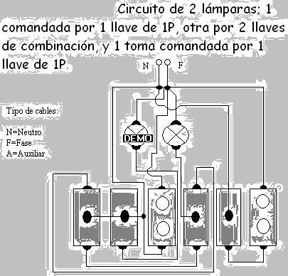

En la segunda clase, en
adelante, el profesor nos dio un plano donde tenia un comedor, una cocina, dos habitaciones
y un baño, que tenian llaves, lamparas y tomas y nos explicó como estaba conectado todo
entre las lamparas llaves, tomas y nos dijo que lo hagamos, como lo explicó, en el gabienete.
Cuando terminamos el profesor lo reviso y lo probo, aunque algunos no le funcionaron y otros
si, el profesor nos dio unos cuantos mas para practicar y sacarnos las dudas. Despues, el
profesor, avisando un dia antes, nos tomó la prueba en el cual todos aprobamos y terminamos
con el taller de electricidad...
